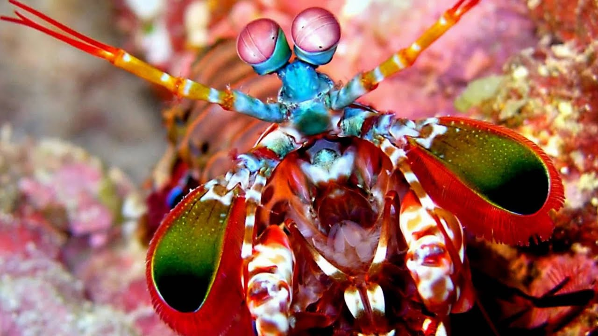

O Stomatopoda
Sobre

Camarão mantis, camarão louva-a-Deus, camarão boxeador, camarão pistola, camarão de estalo, lacraia-do-mar e tamarutaca são alguns dos nomes comuns para o crustáceo marinho (muito parecido com um camarão, mas não é um camarão!) pertencente à ordem Stomatopoda. Medindo cerca de 18 cm e habitando águas claras e rasas dos recifes, esse animal de colorido intenso é bastante apreciado no Aquarismo. Este camarão habita no grande recife de coral da Austrália e usa as suas tenazes, que funcionam como cotovelos em vez de punhos, atacando as suas presas tão rápido quanto uma bala. Quando mantidos em cativeiro, são conhecidos por conseguirem quebrar os vidros dos tanques onde são colocados.
Classificação Científica
| Reino | Animalia |
| Filo | Arthropoda |
| SubFilo | Crustacea |
| Classe | Malacostraca |
| SubClasse | Hoplocarida |
| Ordem | Stomatopoda |
Olhos Incŕiveis

Nossos olhos possuem três tipos de fotorreceptores — que respondem à luz azul, verde e vermelha —, que nos permitem perceber o espectro de cores que vemos. Os cães contam com apenas dois tipos de cones (verde e azul), e é por isso que eles vêm tons de azul, verde e um pouco de amarelo. Já as borboletas, sortudas, possuem cinco tipos de cones, o que significa que elas conseguem enxergar cores que o nosso cérebro é incapaz de processar.
Contudo, as lagostas-boxeadoras são um crustáceo tão sensacional que elas não possuem dois, três ou cinco tipos de cones apenas. Elas contam com 16! Assim, o arco-íris que elas enxergam deve ser uma verdadeira explosão termonuclear de cores, luz e beleza. Mas, como a grande maioria das criaturas, esses animais também possuem um lado obscuro. No caso das tamarutacas, esse lado é negro e sanguinário.
Pesadelo dos mares
As lagostas-boxeadoras costumam ser encontradas próximo à costa de mares tropicais e subtropicais e são predadoras letais que se alimentam de caranguejos, camarões, moluscos e peixes. Na verdade, apesar de não serem muito grandes — entre 15 e 30 centímetros —, as tamarutacas são um verdadeiro pesadelo dos oceanos, sendo consideradas como um dos animais mais violentos do planeta.
Elas possuem duas patas superpoderosas na parte dianteira que, quando acionadas, são capazes de proferir um golpe com a mesma aceleração de um disparo de uma arma do calibre 22 e força de impacto de 60 kg/cm3! E isso em menos de 1/3.000 de segundo, o que significa que, se um humano pudesse acelerar os braços com 1/10 desse poder, seria possível lançar uma bola de baseball em órbita ao redor da Terra.